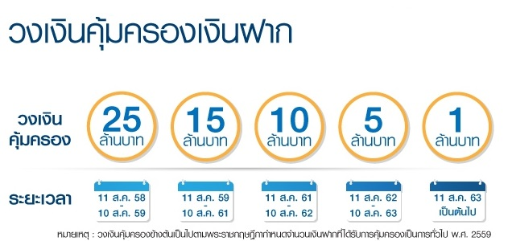

ต้องรู้อะไร...เมื่อไปฝากเงิน
1. อัตราดอกเบี้ยและผลตอบแทนที่แท้จริงในการเลือกเปิดบัญชีเงินฝากไม่ว่าจะเป็นประเภทใด สิ่งสำคัญที่ต้องพิจารณาและเปรียบเทียบคือดอกเบี้ยและผลตอบแทนที่จะได้รับ
ซึ่งสถาบันการเงินต้องเปิดเผยเงื่อนไขการจ่ายดอกเบี้ยให้เราทราบ เช่น วิธีการคำนวณดอกเบี้ย ความถี่ในการจ่าย จำนวนวันต่อปีที่ใช้ในการคิดดอกเบี้ย
ซึ่งต้องปิดประกาศไว้ในที่เปิดเผย ณ ที่ทำการทุกแห่ง และเผยแพร่ในเว็บไซต์ด้วย และอย่าลืมสังเกตวันที่อัตราดอกเบี้ยมีผลบังคับใช้ด้วยซึ่งหากต้องการข้อมูลดอกเบี้ยเงินฝากเปรียบเทียบสามารถดูได้ที่เว็บไซต์ของแบงก์ชาติ
2. ภาษีหัก ณ ที่จ่ายก่อนที่จะตัดสินใจว่าจะเลือกฝากเงินในบัญชีประเภทใดหรือธนาคารใด นอกจากผู้ฝากเงินต้องเปรียบเทียบอัตราดอกเบี้ยของประเภทบัญชีแต่ละประเภทและแต่ละธนาคารแล้ว
ก็ต้องคำนึงถึงภาษีหัก ณ ที่จ่าย ด้วย เพราะเป็นปัจจัยหนึ่งที่ทำให้ผลตอบแทนที่แท้จริงที่เราจะได้รับลดลงไป ตัวอย่างบัญชีเงินฝากที่มีภาษีหัก
ณ ที่จ่าย คือ บัญชีเงินฝากประจำ ซึ่งเมื่อเราได้รับดอกเบี้ยเราก็จะถูกหักภาษี ณ ที่จ่าย 15% ของดอกเบี้ยรับ นอกจากนี้
หลายคนอาจเข้าใจว่าดอกเบี้ยที่ได้รับจากบัญชีเงินฝากออมทรัพย์ได้รับการยกเว้นภาษีทั้งจำนวน ซึ่งเป็นความเข้าใจที่ไม่ถูกต้อง
เพราะถ้าเราได้รับดอกเบี้ยจากเงินฝากออมทรัพย์รวมกันทุกบัญชีจากธนาคารเดียวกันเกิน 20,000 บาทในปีภาษีนั้น เราก็จะถูกธนาคารหักภาษี
ณ ที่จ่ายเช่นกัน แต่ถ้าได้รับดอกเบี้ยจากธนาคารหลาย ๆ แห่งรวมกันเกิน 20,000 บาทในปีภาษีนั้น ผู้ฝากมีหน้าที่ต้องแจ้งแก่ธนาคารเพื่อให้ธนาคารหักภาษี
ณ ที่จ่าย (สามารถศึกษาเพิ่มเติมได้ที่หัวข้อดอกเบี้ยเงินฝากออมทรัพย์)
3. ค่าธรรมเนียมและเบี้ยปรับการฝากเงินและทำธุรกรรมผ่านบัญชีเงินฝากอาจมีค่าธรรมเนียม ทั้งค่าธรรมเนียมปกติหรือเบี้ยปรับหากคุณไม่ทำตามเงื่อนไขที่กำหนด
เช่น - ค่าธรรมเนียมการรักษาบัญชีเงินฝาก ที่คุณจะถูกเรียกเก็บโดยหักเงินออกจากบัญชีของคุณหากจำนวนเงินในบัญชีมียอดต่ำกว่าเกณฑ์ที่ธนาคารกำหนด
ซึ่งก่อนที่จะเรียกเก็บค่าธรรมเนียมประเภทนี้ธนาคารจะมีหนังสือแจ้งเตือนให้ลูกค้าทราบล่วงหน้าไม่น้อยกว่า 30 วัน โดยต้องแจ้งยอดเงินคงเหลือ
เงื่อนไข และอัตราค่าธรรมเนียมที่จะเรียกเก็บ ซึ่งคุณจะมีเวลาในการจัดการกับบัญชีของตัวเอง โดยอาจปิดบัญชีหรือนำเงินไปฝากเพิ่มเพื่อให้บัญชีเคลื่อนไหวหรือมีเงินอยู่ในบัญชีตามเกณฑ์ขั้นต่ำที่ธนาคารกำหนด
- ค่าธรรมเนียมบัตรเอทีเอ็มหรือบัตรเดบิต เช่น ค่าทำบัตรใหม่ ค่าบริการรายปี รวมทั้งค่าธรรมเนียมการทำรายการผ่านตู้เอทีเอ็ม
ไม่ว่าจะเป็นการถอนหรือโอนข้ามเขต ต่างธนาคาร ต่างประเทศ รวมทั้งค่าธรรมเนียมที่อาจเกิดขึ้นหากถอนเกินกว่าจำนวนครั้งที่กำหนด
- ค่าธรรมเนียมและเบี้ยปรับอื่น ๆ เช่น การรับฝากเหรียญกษาปณ์ การโอนเงินอัตโนมัติ การขอ statement ย้อนหลัง การขอตรวจสอบความถูกต้องของบัญชีเงินฝากที่เกิดจากการทำรายการผ่านตู้เอทีเอ็ม
การปิดบัญชีหรือถอนก่อนครบกำหนด และอื่น ๆ ทั้งนี้ ธนาคารต้องเผยแพร่ข้อมูลค่าธรรมเนียมและเบี้ยปรับต่าง ๆ ไว้ในที่เปิดเผยสังเกตเห็นง่ายไว้ที่ทำการทุกแห่ง
รวมทั้งในเว็บไซต์ของธนาคารเอง หรือหากต้องการเปรียบเทียบข้อมูลค่าธรรมเนียมของแต่ละธนาคาร ก็สามารถดูได้ที่เว็บไซต์ของแบงก์ชาติ
4. เงื่อนไขการคุ้มครองเงินฝาก หากคุณออมเงินในรูปของบัญชีเงินฝาก บัตรเงินฝาก และใบรับฝากเงินที่เป็นเงินบาท
และฝากไว้กับธนาคารพาณิชย์ บริษัทเงินทุน และบริษัทเครดิตฟองซิเอร์เงินในบัญชีของคุณจะได้รับความคุ้มครองจากสถาบันคุ้มครองเงินฝาก(Deposit
Protection Agency: DPA) โดยจำนวนเงินฝาก (รวมดอกเบี้ย) จะได้รับการคุ้มครองตามเกณฑ์ที่กำหนดดังนี้
หมายเหตุ: จำนวนเงินฝากที่เกินความคุ้มครองจะได้รับเงินคืนเพิ่มเติมจากการชำระบัญชีจากสถาบันการเงินที่ปิดกิจการเงินฝากที่
DPA ไม่คุ้มครอง เช่น เงินฝากที่เป็นเงินตราต่างประเทศ เงินฝากที่มีอนุพันธ์แฝง เงินฝากในสหกรณ์ เงินฝากในบัญชีเงินบาทของผู้มีถิ่นที่อยู่นอกประเทศตามพระราชบัญญัติควบคุมการแลกเปลี่ยนเงิน
รวมทั้งเงินฝากที่อยู่กับสถาบันการเงินเฉพาะกิจของรัฐที่มีการกำกับดูแลภายใต้กฎหมายเฉพาะ นอกจากนี้ ผลิตภัณฑ์ทางการเงินบางประเภทที่บางคนอาจเข้าใจผิดว่าเป็นเงินฝาก
เช่น ตั๋วแลกเงิน (หรือที่รู้จักกันว่า BE) ตั๋วสัญญาใช้เงิน หุ้นกู้ เงินลงทุนในกองทุนรวม พันธบัตร เช็ค ก็ไม่ได้รับการคุ้มครองจาก
DPA เช่นกัน ข้อมูลเพิ่มเติม: สถาบันคุ้มครองเงินฝาก
5. การแจ้งเปลี่ยนแปลงที่อยู่หากเปลี่ยนแปลงที่อยู่ต้องแจ้งให้ธนาคารที่เรามีบัญชีอยู่ทราบด้วย เพราะหากธนาคารเปลี่ยนแปลงเงื่อนไขต่าง
ๆ เช่น แจ้งบัญชีเงินฝากไม่เคลื่อนไหวก่อนเรียกเก็บค่าธรรมเนียมรักษาบัญชี หรือแจ้งให้ลูกค้าทราบสถานะทางบัญชีเนื่องจากขาดการติดต่อเป็นระยะเวลานาน
ธนาคารจะแจ้งเป็นจดหมายลงทะเบียนให้ลูกค้าหรือทายาทเพียง 2 ครั้ง และจะใช้ที่อยู่ที่ลูกค้าแจ้งตอนเปิดบัญชี หรือที่อยู่ที่ได้แจ้งไว้อย่างเป็นทางการเท่านั้น
ไม่ว่าจะติดต่อได้หรือไม่ได้ก็ตาม จะถือว่าสถาบันการเงินได้แจ้งให้ลูกค้าทราบแล้วดังนั้น หากเปลี่ยนแปลงที่อยู่และสถาบันการเงินไม่สามารถติดต่อได้ก็อาจทำให้เราไม่ทราบข่าวคราวความเคลื่อนไหวที่สำคัญ
หรือไม่สามารถดำเนินการกับบัญชีของตัวเองได้ภายในเวลาที่ธนาคารกำหนด ซึ่งอาจทำให้ต้องเสียค่าใช้จ่ายที่ไม่จำเป็น หรืออาจเกิดความเสียหายอื่น
ๆ ได้
6. โทษตามกฎหมายสำหรับการรับจ้างเปิดบัญชีรับเปิดบัญชี การรับจ้างเปิดบัญชีเพื่อหวังค่าตอบแทนอาจนำภัยมาสู่ผู้รับจ้างอย่างคาดไม่ถึง
เพราะส่วนใหญ่แล้วผู้ว่าจ้างคือกลุ่มมิจฉาชีพ ซึ่งจะนำเงินที่ได้จากการกระทำที่ผิดกฎหมาย เช่น เงินที่ได้จากการค้ายาเสพติด
การหลอกลวงทางโทรศัพท์หรือแก๊งคอลเซ็นเตอร์ แชร์ลูกโซ่ บ่อนการพนัน และอื่น ๆ มาผ่านบัญชีของผู้รับจ้างซึ่งถูกใช้เป็นบัญชีผู้รับโอนเงินต้นทาง
ก่อนที่จะให้ผู้รับจ้างโอนเงินต่อไปยังบัญชีอื่น หรือให้ผู้อื่นใช้บัตรเอทีเอ็มที่เชื่อมโยงกับบัญชีนั้นไปกดเงินออกจากตู้เอทีเอ็มเพื่อโยกย้ายเงินออกจากบัญชีของผู้รับจ้าง
ซึ่งการโยกย้ายเงินออกจากบัญชีในลักษณะเช่นนี้จะทำให้ยากต่อการตรวจสอบและการติดตามจับกุมของเจ้าหน้าที่
